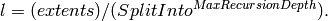
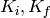

ConvertToReflectometryQ dialog.
Table of Contents
| Name | Direction | Type | Default | Description |
|---|---|---|---|---|
| InputWorkspace | Input | MatrixWorkspace | Mandatory | An input workspace in wavelength |
| OutputDimensions | Input | string | Q (lab frame) | What will be the dimensions of the output workspace? Q (lab frame): Wave-vector change of the lattice in the lab frame. P (lab frame): Momentum in the sample frame. K initial and final vectors in the z plane. Allowed values: [‘Q (lab frame)’, ‘P (lab frame)’, ‘K (incident, final)’] |
| Method | Input | string | Centre | What method should be used for the axis transformation? Centre: Use center point rebinning. NormalisedPolygon: Use normalised polygon rebinning. Allowed values: [‘Centre’, ‘NormalisedPolygon’] |
| OverrideIncidentTheta | Input | boolean | False | Use the provided incident theta value. |
| IncidentTheta | Input | number | -1 | An input incident theta value specified in degrees.Optional input value for the incident theta specified in degrees. |
| Extents | Input | dbl list | -50,50,-50,50 | A comma separated list of min, max for each dimension. Takes four values in the form dim_0_min, dim_0_max, dim_1_min, dim_1_max, specifying the extents of each dimension. Optional, default +-50 in each dimension. |
| OutputAsMDWorkspace | Input | boolean | True | Generate the output as a MDWorkspace, otherwise a Workspace2D is returned. |
| OutputWorkspace | Output | IMDWorkspace | Mandatory | Output 2D Workspace. |
| OutputVertexes | Output | TableWorkspace | Mandatory | Output TableWorkspace with vertex information. See DumpVertexes property. |
| NumberBinsQx | Input | number | 100 | The number of bins along the qx axis. Optional and only applies to 2D workspaces. Defaults to 100. |
| NumberBinsQz | Input | number | 100 | The number of bins along the qx axis. Optional and only applies to 2D workspaces. Defaults to 100. |
| DumpVertexes | Input | boolean | False | If set, with 2D rebinning, the intermediate vertexes for each polygon will be written out for debugging purposes. Creates a second output table workspace. |
| SplitInto | Input | int list | 2,2 | A comma separated list of into how many sub-grid elements each dimension should split; or just one to split into the same number for all dimensions. Default 2,2. |
| SplitThreshold | Input | number | 50 | How many events in a box before it should be split. Default 50. |
| MaxRecursionDepth | Input | number | 10 | How many levels of box splitting recursion are allowed. The smallest box will have each side length  Default 10. |
The workspace spectrum axis should be converted to signed_theta using ConvertSpectrumAxis v2 and the x axis should be converted to Wavelength using ConvertUnits v1 before running this algorithm. Histogram input workspaces are expected.
The algorithm will looks for a specific log value called stheta, which
contains the incident theta angle  . If the input
workspace does not contain this value, or if you wish to override this
value you can do so by providing your own IncidentTheta property and
enabling OverrideIncidentTheta.
. If the input
workspace does not contain this value, or if you wish to override this
value you can do so by providing your own IncidentTheta property and
enabling OverrideIncidentTheta.
The algorithm also has the ability to produce additional debugging information from the Tableworkspace that can be used to create a patch plot of results before any 2D fractional rebinning has happened.
To create this table there are certain properties that must be present in the algorithm:
Output workspaces are always 2D MD Histogram workspaces, but the algorithm will perform one of three possible transformations.
 ,
, 
 ,
, 
 ,
,  . Note that P and K are
interchangeable.
. Note that P and K are
interchangeable.where


You will usually want to rebin using BinMD v1 or SliceMD v1 after transformation because the output workspaces are not regularly binned.
The Method property allows the binning method used when applying the coordinate transformations to be selected. The default method, Centre, takes center point of each input bin, and locates the corresponding output bin, adding the input bins value to it. Centre point rebinning is faster.
NormalisedPolygon is a more sophisticated approach. It constructs a polygon using the boundaries of the input bin, then transforms that polygon into the output coordinates, and then searches for intersections with the output bins. The value added to each output bin is proportional to size of the overlap with the input bin. The normalised polygon approach gives better accuracy.
Example - Normalised Polygon transformation
workspace_name = "POLREF4699"
workspace_nexus_file = workspace_name + ".nxs"
Load(Filename=workspace_nexus_file,OutputWorkspace=workspace_name)
X = mtd[workspace_name]
X = ConvertUnits(InputWorkspace=X,Target="Wavelength",AlignBins="1")
# Reference intensity to normalise by
CropWorkspace(InputWorkspace=X,OutputWorkspace='Io',XMin=0.8,XMax=14.5,StartWorkspaceIndex=2,EndWorkspaceIndex=2)
# Crop out transmission and noisy data
CropWorkspace(InputWorkspace=X,OutputWorkspace='D',XMin=0.8,XMax=14.5,StartWorkspaceIndex=3)
Io=mtd['Io']
D=mtd['D']
# Peform the normalisation step
Divide(LHSWorkspace=D,RHSWorkspace=Io,OutputWorkspace='I',AllowDifferentNumberSpectra='1',ClearRHSWorkspace='1')
I=mtd['I'][0]
# Move the detector so that the detector channel matching the reflected beam is at 0,0
PIX = 1.1E-3 #m
SC = 75
avgDB = 29
zOffset = -PIX * ((SC - avgDB) * 0.5 + avgDB)
MoveInstrumentComponent(Workspace = I, ComponentName = "lineardetector", X = 0, Y = 0, Z = zOffset)
# Should now have signed theta vs Lambda
ConvertSpectrumAxis(InputWorkspace=I,OutputWorkspace='SignedTheta_vs_Wavelength',Target='signed_theta')
qxqy, vertexes_qxqy = ConvertToReflectometryQ(InputWorkspace='SignedTheta_vs_Wavelength', OutputDimensions='Q (lab frame)', Extents='-0.0005,0.0005,0,0.12', OutputAsMDWorkspace=False,Method='NormalisedPolygon')
kikf, vertexes_kikf = ConvertToReflectometryQ(InputWorkspace='SignedTheta_vs_Wavelength', OutputDimensions='K (incident, final)', Extents='0,0.05,0,0.05', OutputAsMDWorkspace=False,Method='NormalisedPolygon')
pipf, vertexes_pipf = ConvertToReflectometryQ(InputWorkspace='SignedTheta_vs_Wavelength', OutputDimensions='P (lab frame)', Extents='0,0.1,-0.02,0.15', OutputAsMDWorkspace=False,Method='NormalisedPolygon')
print qxqy.getDimension(0).getName(), qxqy.getDimension(1).getName()
print kikf.getDimension(0).getName(), kikf.getDimension(1).getName()
print pipf.getDimension(0).getName(), pipf.getDimension(1).getName()
Output:
Qx Qz
Ki Kf
Pz_i + Pz_f Pz_i - Pz_f
ConvertToReflectometryQ has the functionality to produce a table of vertexes before they are fitted to a normalised polygon. The plotting of these vertexes results in a patch plot that can be achieved by running the algorithm below.
Example - Patch Plot using the Dumped vertexes from QxQy Transformation
import numpy as np
import matplotlib
from matplotlib.patches import Polygon
from matplotlib.collections import PatchCollection
import matplotlib.pyplot as plt
from matplotlib.colors import LogNorm
# full reduction on workspace
Load(Filename='data_th_lam.nxs', OutputWorkspace='data_th_lam')
CropWorkspace('data_th_lam', StartWorkspaceIndex=124, OutputWorkspace='data_th_lam')
data_th_lam = Rebin('data_th_lam', [1e-2])
out_ws, dump_vertexes = ConvertToReflectometryQ(InputWorkspace='data_th_lam',OutputWorkspace='QxQy_poly', OutputDimensions='Q (lab frame)',
Extents='-0.0005,0.0005,-0,0.2', OutputAsMDWorkspace=False,Method='NormalisedPolygon', IncidentTheta=0.44, OverrideIncidentTheta=True, NumberBinsQx=100, NumberBinsQz=100,DumpVertexes=True, OutputVertexes='dump_vertexes')
#plot the conversion
plotSlice(out_ws)
def patch_plot(vertex_table):
fig, ax = plt.subplots()
patches = list()
colors = list()
polygon_vertexes = list()
for vertex in vertex_table:
#Column of vertex i.e 'Qx' in this case, is dependant on the type of transform.
#'Ki' and 'Kf' are used for the K transformation.
#'Pi+Pf' and 'Pi-Pf' are used for the P transformation.
polygon_vertexes.append((vertex['Qx'], vertex['Qy'] ))
if len(polygon_vertexes) == 4:
poly = Polygon(polygon_vertexes, True,edgecolor='none',linewidth=0)
patches.append(poly)
colors.append(vertex['CellSignal'])
polygon_vertexes = list()
p = PatchCollection(patches, cmap=matplotlib.cm.jet,norm=LogNorm(vmin=1e-3, vmax=1e5),linewidths=(0,))
p.set_array(np.array(colors))
ax.add_collection(p)
plt.colorbar(p)
axes = plt.gca()
axes.set_xlim([-0.0004,0.0004])
axes.set_ylim([0,0.2])
plt.show()
threadsafe_call(patch_plot, dump_vertexes)
Output:
Patch plot for QxQy Transformation:

Patch plots can also be produced using the other Transformations  and 
Patch plot for KiKf Transformation:

Patch plot for P Transformation:

Categories: Algorithms | Reflectometry